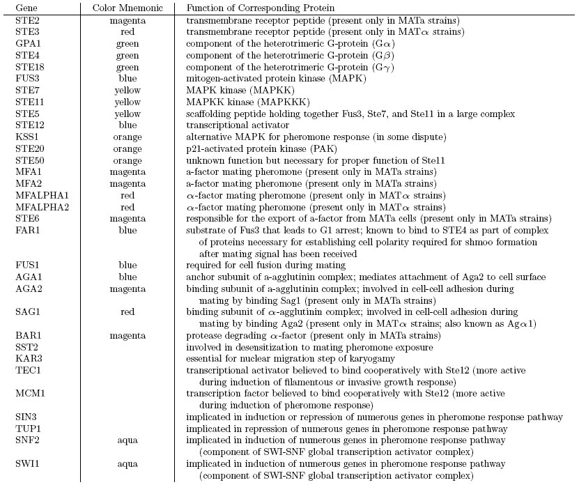
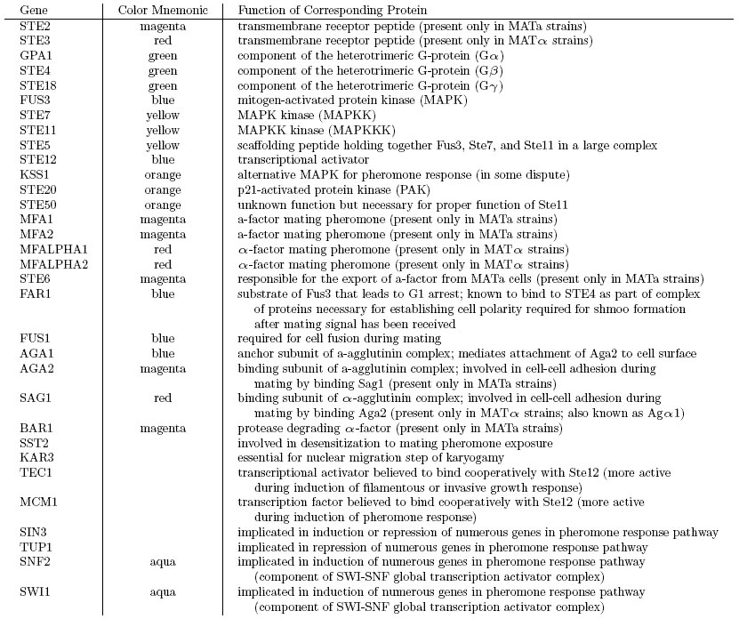

Figure 2. Bayesian network models learned by model averaging over the 500 highest scoring models visited during the unconstrained and constrained simulated annealing search runs, respectively. Edges are included in the gure if and only if their posterior probability exceeds 0.5. Node and edge color descriptions are included in the text.
Yeast (Saccharomyces cerevisiae)
Excepted from text:
Graph nodes have been augmented with color information to indicate the different groups of variables with known relationships in the literature, as indicated in Table 1 and below. Graph edges have also been augmented with color information: solid black edges have posterior probabil- ity of 1, solid blue edges have probability between 1 and 0.99, dashed blue edges have probability between 0.99 and 0.75, and dotted blue edges have probability between 0.75 and 0.5. The strength of an edge does not indicate how signicantly a parent node contributes to the ability to explain the child node but rather an approximate measure of how likely a parent node is to contribute to the ability to explain the child node.
Table 1. Descriptions of the 32 genes selected for model induction. The color mnemonics are used later in Figure 2: genes expressed only in MATa cells are magenta, genes expressed only in MATalpha cells are red, genes whose promoters are bound by Ste12 are blue, genes coding for components of the G-protein complex are green, genes coding for core components of the signaling cascade complex are yellow (except FUS3 which is already blue), genes coding for auxiliary components of the signaling cascade are orange, and genes coding for components of the SWI-SNF complex are aqua.
Q&A
Abstract: We develop principled methods for the automatic induction (discovery) of genetic regulatory network models from multiple data sources and data modalities. Models of regulatory networks are represented as Bayesian networks, allowing the models to compactly and robustly capture probabilistic multivariate statistical dependencies between the various cellular factors in these networks. We build on previous Bayesian network validation results by extending the validation framework to the context of model induction, leveraging heuristic simulated annealing search algorithms and posterior model averaging. Using expression data in isolation yields results inconsistent with location data so we incorporate genomic location data to guide the model induction process. We combine these two data modalities by allowing location data to influence the model prior and expression data to influence the model likelihood. We demonstrate the utility of this approach by discovering genetic regulatory models of thirty-three variables involved in S. cerevisiae pheromone response. The models we automatically generate are consistent with the current understanding regarding this regulatory network, but also suggest new directions for future experimental investigation.
![Table 1. Descriptions of the 32 genes selected for model induction. The color mnemonics are used later in Figure 2: genes expressed only in MATa cells are magenta, genes expressed only in MATalpha cells are red, genes whose promoters are bound by Ste12 are blue, genes coding for components of the G-protein complex are green, genes coding for core components of the signaling cascade complex are yellow (except FUS3 which is already blue), genes coding for auxiliary components of the signaling cascade are orange, and genes coding for components of the SWI-SNF complex are aqua. Q&A What is this paper about? Abstract: We develop principled methods for the automatic induction (discovery) of genetic regulatory network models from multiple data sources and data modalities. Models of regulatory networks are represented as Bayesian networks, allowing the models to compactly and robustly capture probabilistic multivariate statistical dependencies between the various cellular factors in these networks. We build on previous Bayesian network validation results by extending the validation framework to the context of model induction, leveraging heuristic simulated annealing search algorithms and posterior model averaging. Using expression data in isolation yields results inconsistent with location data so we incorporate genomic location data to guide the model induction process. We combine these two data modalities by allowing location data to influence the model prior and expression data to influence the model likelihood. We demonstrate the utility of this approach by discovering genetic regulatory models of thirty-three variables involved in S. cerevisiae pheromone response. The models we automatically generate are consistent with the current understanding regarding this regulatory network, but also suggest new directions for future experimental investigation. What organism is being modeled? Yeast (Saccharomyces cerevisiae)](table1_lrg.jpg){kind=link}